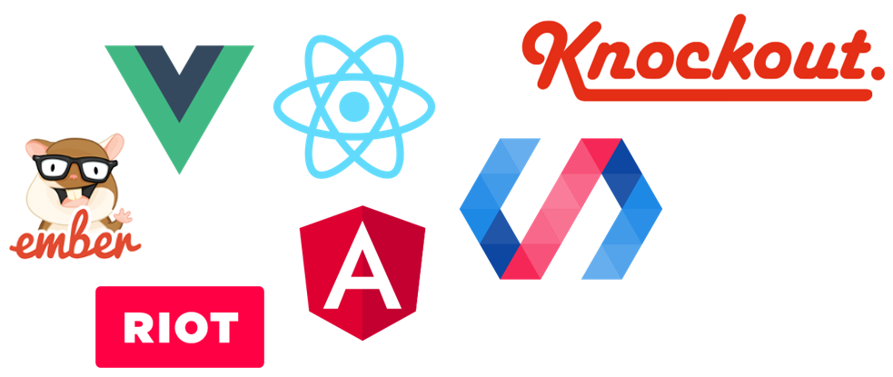

Other ways to do data binding.

And .js frameworks. .js is 3GL.
About 18 month half life, current fashion is Vue.
Some would say it is a fad

But there are dev. that know more than one.

If you look close, bottom right; RIOT.js is DOM! We can Pug.
In 90 seconds I'll teach you RIOT.js.org data binding
In pug
Compile the pug ( notice it looks like React, but easy to build)

Via riot-cli or: nbake -t .
Import the .js in page
mount, and call the method. THE END of 90 seconds.
Why write REST, Cache, Ajax/fetch()? Say no to CRUD.

Looks like 3gl.
In 90 seconds I'll teach you RIOT.js.org data binding
In pug
Compile the pug ( notice it looks like React, but easy to build)
Via riot-cli or: nbake -t .
Import the .js in page
mount, and call the method. THE END of 90 seconds.
Why write REST, CRUD, Cache, Ajax/fetch()?
Don't! Looks like 3gl.
You can call an DB API from browser.
And bind in a tag.
Test the tag (that black-boxes data binding )
so that even a designer can use it in a page. A bit like DSL for your UX.
You would not use 2GL! Why use 3GL, when you have option for 4GL productivity.
Avoid Resume based development. Ex: code splitting.
4GL
Custom tag to black box.